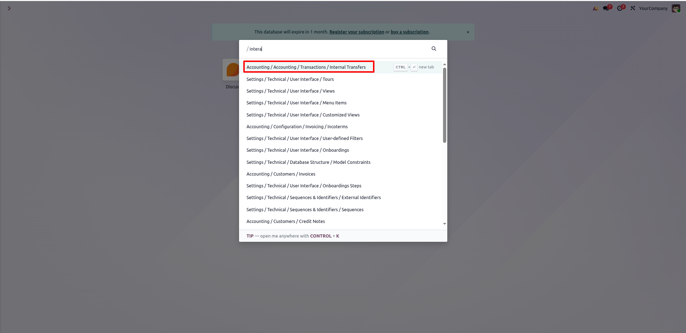
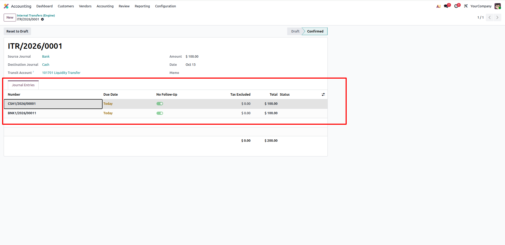
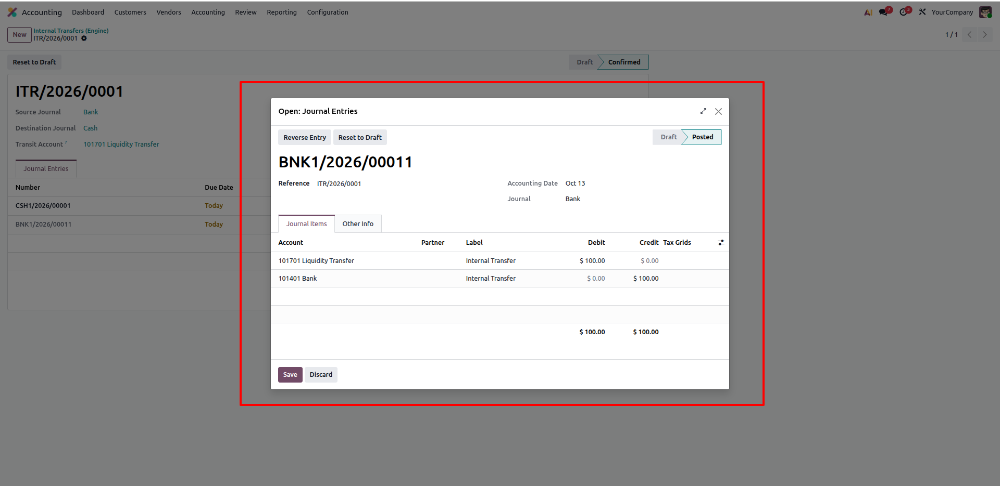
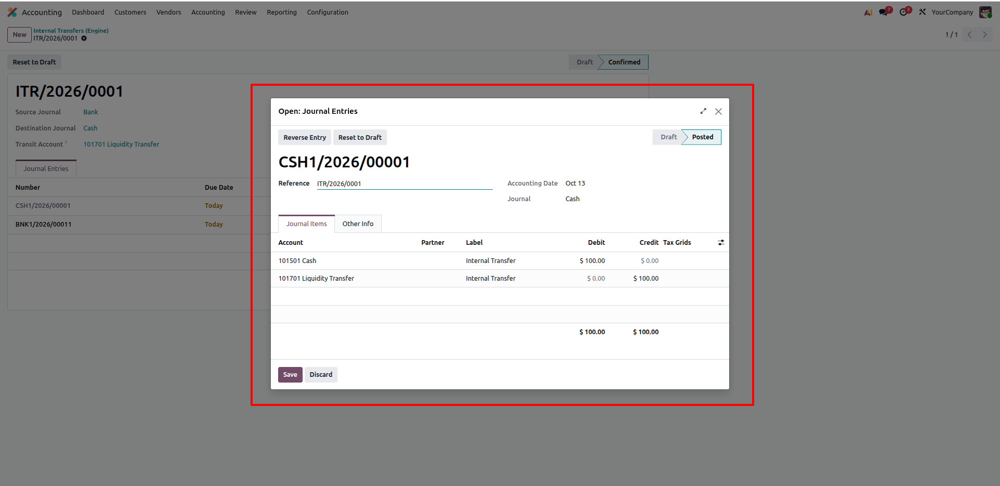
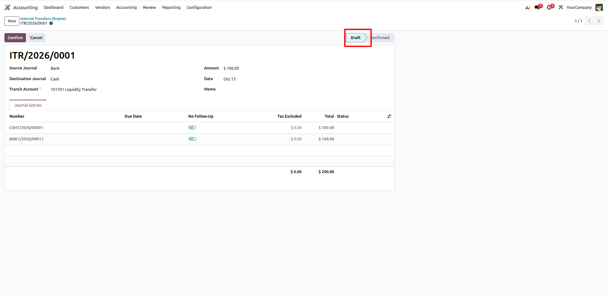
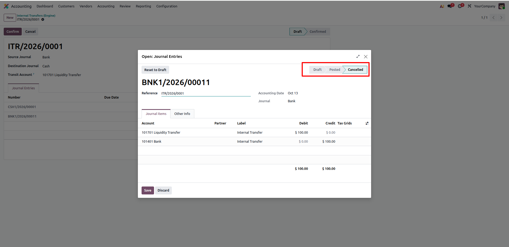
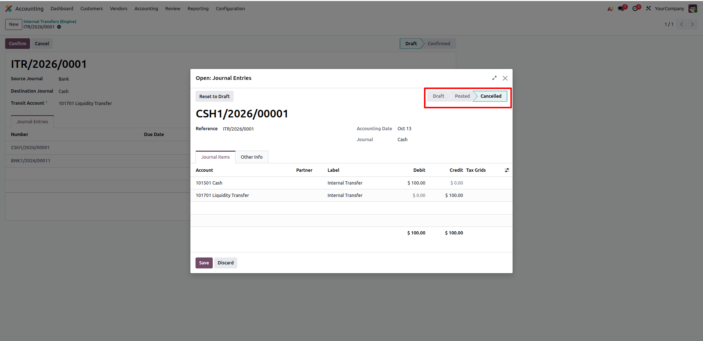
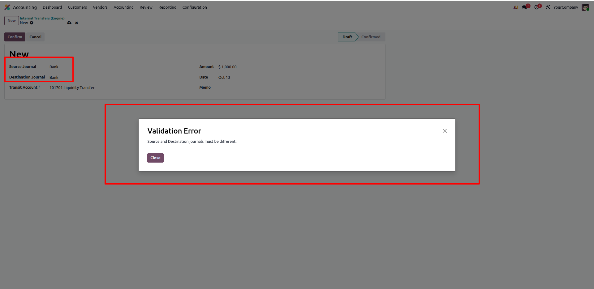

Seamlessly transfer liquidity between any bank or cash journals by creating and posting a balanced pair of double-entry journal vouchers through a configurable transit clearing account, complete with draft, confirm, and reset workflows.
Free pre-sales consultation and lifetime support for every installation.
Contact Technical SupportEliminate manual two-sided journal vouchers with zero transit account discrepancy
Generates and posts synchronized journal entries simultaneously in source and destination journals with exact debit/credit balancing.
Routes funds through a dedicated transit clearing account that nets to zero instantly upon posting, maintaining pristine ledger auditability.
Complete control workflow with one-click draft reversal that automatically cancels and resets posted entries without leaving orphaned records.
How Internal Bank/Cash Transfer Engine eliminates errors in treasury operations
12 Core capabilities engineered for seamless double-entry bank and cash transfers
Generates and posts two balanced journal entries in a single click: crediting source journal and debiting destination journal through transit.
Select any intermediary clearing account. Both legs of the transfer post against this transit account, leaving its balance exactly zero.
Prevents transfer errors by strictly validating that source and destination journals are distinct and restricted to bank or cash types.
Built-in model constraints ensure transfer amounts are strictly greater than zero, preventing accidental negative or empty postings.
Validates default accounts on both journals and immediately posts both generated entries into the general ledger in one transaction.
One-click rollback automatically drafts and cancels all generated journal entries, preventing orphaned moves or manual ledger cleanup.
Integrated relational notebook page displays all generated accounting vouchers directly on the transfer form for total transparency.
Generates unique sequential reference codes automatically via an ir.sequence sequence engine for reliable financial tracking.
Enforces strict company-level filtering so journals, accounts, currencies, and transfers remain isolated within the active entity.
Transfer memos, transfer dates, and reference codes seamlessly propagate to move references and debit/credit line descriptions.
Cancel button drafts and cancels all generated journal vouchers in one operation, keeping company books audit-ready and compliant.
Built strictly upon standard Odoo core accounting architecture (account.move, account.journal), ensuring 100% upgrade stability.
How Internal Bank/Cash Transfer Engine operates in Odoo
Quickly locate the feature by navigating to Accounting > Accounting > Transactions > Internal Transfers (or search via the command palette).
Opens the centralized management interface for initiating, monitoring, and auditing bank and cash transfers.

Upon clicking Confirm, the transfer record moves to the Confirmed state.
The system automatically creates and posts balanced two-sided journal entries for both Cash and Bank journals, displayed directly under the Journal Entries tab.

Inspect the generated move for the Source Bank journal.
The entry is in Posted state: debits the Transit Account (Liquidity Transfer) and credits the Bank Account, perfectly balanced with automated references.

Inspect the generated move for the Destination Cash journal.
The entry is in Posted state: debits the Cash Account and credits the Transit Account (Liquidity Transfer), zeroing out the transit clearing account balance instantaneously.

Need to make adjustments? Click Reset to Draft from the confirmed transfer record.
The transfer state seamlessly returns to Draft, reopening the record for field edits or re-execution while managing underlying vouchers safely.

When resetting to draft, the engine unposts and cancels the linked source journal entry automatically.
The Bank journal move status transitions cleanly to Cancelled, preventing erroneous GL impacts or ghost records.

Simultaneously, the engine rolls back and cancels the linked destination Cash journal move.
The Cash entry is marked as Cancelled, ensuring both ends of the transfer remain in perfect synchronization without requiring manual intervention.

Built-in constraint checks actively guard against bookkeeping mistakes.
If a user selects the same journal as both Source and Destination, or enters an invalid amount, the engine raises an immediate Validation Error before any journal entries can be generated.

Click any question below to expand or collapse details